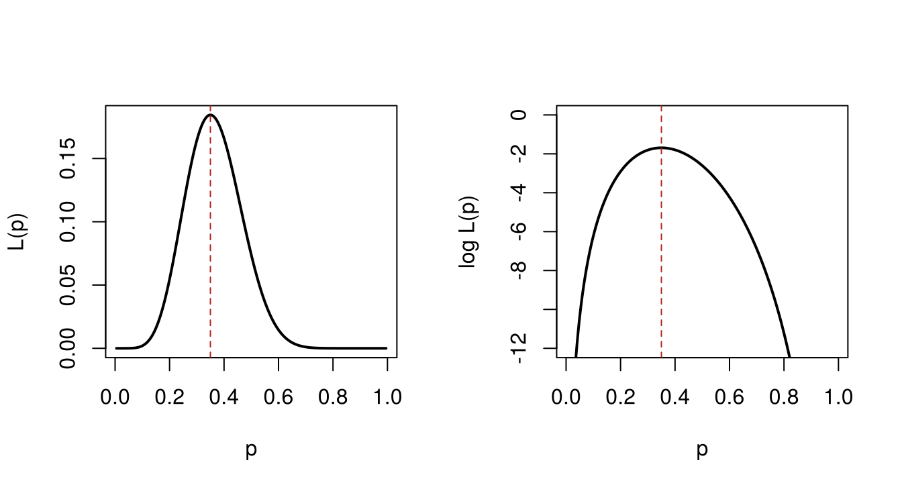
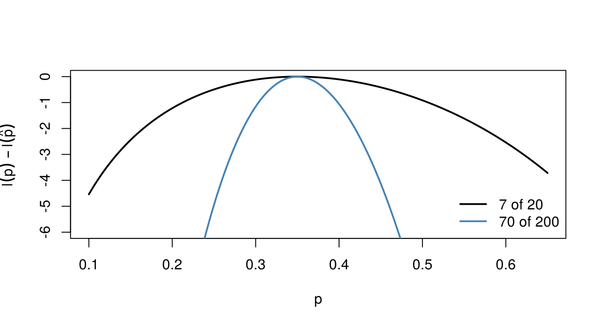
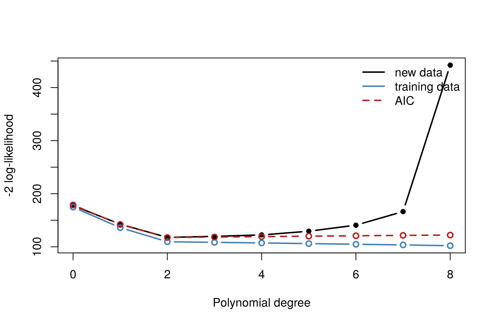

DEF — definition KEY — key idea to remember ↪ — bridge to another day ⚠ — common pitfall
Three questions run underneath every model in this book. How are its parameters chosen? How wrong is it? And how should one model be preferred to another? This chapter gives one connected answer. Maximum likelihood chooses the parameters, the Kullback–Leibler divergence measures how wrong a model is, and AIC estimates that divergence from the data, including a correction for the optimism seen at the end of Day 1.
Likelihood
From probability to likelihood
Twenty patients receive a drug and seven respond. If the response probability were known, the binomial distribution of Day 1 would give the probability of this outcome. Here the situation is reversed: the outcome is fixed, \(k = 7\) of \(n = 20\), and \(p\) is unknown. The same formula, read as a function of \(p\), is the likelihood.
p <-seq(0.005, 0.995, length.out =500)op <-par(mfrow =c(1, 2))plot(p, dbinom(7, 20, p), type ="l", lwd =2, xlab ="p", ylab ="L(p)")abline(v =7/20, lty =2, col ="firebrick")plot(p, dbinom(7, 20, p, log =TRUE), type ="l", lwd =2, ylim =c(-12, 0),xlab ="p", ylab ="log L(p)")abline(v =7/20, lty =2, col ="firebrick")

par(op)
DEF — For independent observations with density or probability \(f(x;\theta)\), the likelihood is \(L(\theta) = \prod_i f(x_i;\theta)\) and the log-likelihood is \(\ell(\theta) = \sum_i \ln f(x_i;\theta)\). The data are fixed; \(\theta\) varies.
The maximum likelihood estimate (MLE) \(\hat\theta\) is the value that makes the observed data most probable. The logarithm turns the product into a sum, does not move the maximum, and avoids numerically tiny numbers.
The second derivative is negative for all \(p\), so this is a maximum. The estimate of a probability is the observed fraction, here 0.35, as the figure shows. The same recipe gives \(\hat\lambda = \bar x\) for the Poisson distribution.
Normal residuals: least squares is maximum likelihood
Take the linear model of Day 1 with normal residuals. The log-likelihood is
The first term has no \(\boldsymbol\beta\) in it, and the second is minus the residual sum of squares, up to a constant. Therefore:
KEY — Least squares is not an arbitrary choice. It is what maximum likelihood gives when the residuals are normal.
\(\ell\) is maximal exactly where RSS is minimal. Maximising over \(\sigma^2\) gives \(\hat\sigma^2 = \text{RSS}/n\).
set.seed(2026)x <-runif(40, 0, 10)y <-3+1.5* x +rnorm(40, 0, 2)fit <-lm(y ~ x)n <-length(y); rss <-sum(resid(fit)^2)ll_by_hand <--n /2*log(2* pi * rss / n) - n /2c(by_hand = ll_by_hand, logLik_in_R =as.numeric(logLik(fit)))
#> by_hand logLik_in_R
#> -80.18474 -80.18474
⚠ The maximum likelihood estimate \(\text{RSS}/n\) is biased. summary(lm) reports the unbiased \(\text{RSS}/(n-p)\), using the degrees of freedom of Day 1.
The maximum can also be found by a general-purpose optimiser, which is what happens when no formula exists.
Using exp(par[3]) keeps the standard deviation positive without a constraint.
Curvature and uncertainty
A sharply peaked likelihood means the data pin the parameter down. A flat one means they do not. Curvature therefore measures information.
ell <-function(p, k, n) k *log(p) + (n - k) *log(1- p)p <-seq(0.1, 0.65, length.out =400)plot(p, ell(p, 7, 20) -ell(0.35, 7, 20), type ="l", lwd =2, ylim =c(-6, 0),xlab ="p", ylab =expression(l(p) -l(hat(p))))lines(p, ell(p, 70, 200) -ell(0.35, 70, 200), lwd =2, col ="steelblue")legend("bottomright", c("7 of 20", "70 of 200"), col =c("black", "steelblue"),lwd =2, bty ="n")

DEF — The Fisher information is the expected curvature of the log-likelihood, \(I(\theta) = -E[\ell''(\theta)]\). For large samples, \(\operatorname{SE}(\hat\theta) \approx 1/\sqrt{I(\hat\theta)}\).
For the binomial model, \(I(p) = n / (p(1-p))\), so \(\operatorname{SE}(\hat p) = \sqrt{\hat p(1-\hat p)/n}\). Ten times the data gives ten times the curvature and \(\sqrt{10}\) times the precision, the same \(\sqrt n\) as for the mean. Standard errors in glm output are computed this way.
Logistic regression
The model
A binary outcome (tumour or normal, responder or not) has a Bernoulli distribution with probability \(p_i\). A linear predictor can take any value, while a probability cannot. The logit connects them:
Write \(\eta_i = \mathbf{x}_i^\top\boldsymbol\beta\) for the linear predictor. Since \(\ln p_i = \eta_i - \ln(1 + e^{\eta_i})\) and \(\ln(1 - p_i) = -\ln(1 + e^{\eta_i})\), the log-likelihood simplifies to
This has the same form as the normal equations of Day 3, \(\mathbf{X}^\top(\mathbf{y} - \hat{\mathbf{y}}) = \mathbf{0}\): at the maximum, the residuals \(y_i - p_i\) are orthogonal to every predictor. The difference is that \(\mathbf{p}\) depends on \(\boldsymbol\beta\) non-linearly, so the equations cannot be solved in closed form.
Differentiating once more, with \(\partial p_i/\partial\eta_i = p_i(1-p_i)\), gives the matrix of second derivatives, the Hessian:
KEY — The weights \(p_i(1-p_i)\) are positive, so the Hessian is negative definite and the log-likelihood is concave: it has a single maximum, and any method that climbs will find it.
\(\mathbf{X}^\top\mathbf{W}\mathbf{X}\) is the Fisher information of the previous section, now a matrix. Newton’s method approximates \(\ell\) at the current \(\boldsymbol\beta\) by a quadratic with this gradient and curvature, and jumps to the maximum of that quadratic:
X <-cbind(1, dat$cpg1, dat$cpg2, dat$cpg3)y <- dat$tumourb <-rep(0, ncol(X))for (i in1:7) { p <-plogis(drop(X %*% b)) W <- p * (1- p) info <-t(X) %*% (X * W) # Fisher information grad <-t(X) %*% (y - p) # gradient of the log-likelihood b <- b +solve(info, grad)cat(sprintf("iteration %d: log-likelihood %.4f\n", i,sum(y *log(p) + (1- y) *log(1- p))))}
A few iterations are enough, and the results agree with glm. The estimates can be compared with the true values of \(-0.5\), \(1.5\), \(-1\) and \(0\).
Newton’s method is weighted least squares
The update can be rewritten in a revealing way. Define the working response\(\mathbf{z} = \mathbf{X}\boldsymbol\beta + \mathbf{W}^{-1}(\mathbf{y} - \mathbf{p})\). Then
which is the formula for a weighted least-squares regression of \(\mathbf{z}\) on \(\mathbf{X}\). Each Newton step is an ordinary regression with weights and a response that are recomputed from the current fit. The algorithm is therefore called iteratively reweighted least squares (IRLS), and it is what glm runs. The line “Number of Fisher Scoring iterations” at the foot of a glm summary counts these steps.
Why not plain gradient ascent?
Day 3 introduced gradient descent. Here it would climb instead: \(\boldsymbol\beta \leftarrow \boldsymbol\beta + \eta\,\mathbf{X}^\top(\mathbf{y} - \mathbf{p})\). Since \(p_i(1-p_i) \le \tfrac14\), the curvature is never larger than \(\lambda_{\max}(\mathbf{X}^\top\mathbf{X})/4\), and a step size of \(\eta = 4/\lambda_{\max}\) is guaranteed to converge.
eta <-4/max(eigen(t(X) %*% X)$values)b_ga <-rep(0, ncol(X))trace_ga <-list()for (i in1:200) { b_ga <- b_ga + eta *drop(t(X) %*% (y -plogis(drop(X %*% b_ga))))if (i %in%c(7, 50, 200)) trace_ga[[paste0("gradient_ascent_", i)]] <- b_ga}out <-rbind(do.call(rbind, trace_ga), newton_7 =drop(b))colnames(out) <-c("intercept", "cpg1", "cpg2", "cpg3")round(out, 3)
Gradient ascent reaches the same answer in the end, but after seven iterations it is still visibly off, where Newton’s method had already converged. Newton’s method uses the curvature to choose both the direction and the length of each step. Its price is solving a \(p \times p\) linear system per step, which is why very large models, such as neural networks, are trained by gradient methods after all.
⚠ If a predictor separates the two classes perfectly, the likelihood keeps rising as \(\beta \to \infty\) and glm warns that fitted probabilities of 0 or 1 occurred. With more genes than samples this is almost guaranteed. Day 9 provides the remedy.
The same model in Python
A popular Python library shows why it pays to know what is being maximised.
print("effectively no penalty:", np.round(unpenalised.coef_[0], 3))
#> effectively no penalty: [ 1.675 -1.361 -0.049]
The second line reproduces glm. The first does not, because scikit-learn adds a ridge penalty by default. Its default is not maximum likelihood.
↪ Day 9 explains what that penalty does.
Two routes to a linear boundary
Logistic regression models \(P(y \mid \mathbf{x})\) directly, and it is therefore called discriminative. Linear discriminant analysis (LDA) is generative: it assumes that within each class \(\mathbf{x} \sim N(\boldsymbol\mu_k, \boldsymbol\Sigma)\) with a shared covariance, and it obtains the class probabilities from Bayes’ theorem. The resulting posterior has exactly the logistic form, so both give a linear boundary.
Logistic regression
LDA
Type
discriminative
generative
Assumption on \(\mathbf{x}\)
none
normal, shared covariance
Fitting
iterative
closed form
When the assumption holds
somewhat less efficient
more efficient
When it fails
robust
can be misled
Information and divergence
Surprise and entropy
An outcome with a small probability is surprising when it occurs. The information content of outcome \(x\) is \(-\ln p(x)\): zero for a certain event, growing as the probability shrinks, and additive for independent events. The entropy is its average:
\[
H(p) = -\sum_x p(x)\ln p(x) .
\]
Cross-entropy and the Kullback–Leibler divergence
Suppose outcomes come from \(p\) while we calculate with a model \(q\). The cross-entropy\(H(p,q) = -\sum_x p(x)\ln q(x)\) is the average surprise under the wrong distribution. The excess over the unavoidable \(H(p)\) is the Kullback–Leibler divergence(Kullback and Leibler 1951):
It is never negative, and it is zero only if \(q = p\).
As a worked example, take the nucleotide frequencies in an AT-rich region, against a model of no preference.
kl <-function(p, q) sum(ifelse(p >0, p *log(p / q), 0))p <-c(A =0.4, C =0.1, G =0.1, T =0.4)q <-rep(0.25, 4)rbind(contribution = p *log(p / q))
#> A C G T
#> contribution 0.1880015 -0.09162907 -0.09162907 0.1880015
c(D_p_q =kl(p, q), D_q_p =kl(q, p))
#> D_p_q D_q_p
#> 0.1927448 0.2231436
⚠ The divergence is not a distance: \(D(p\|q) \ne D(q\|p)\). The order matters: first the distribution that generates the data, then the model. It is infinite if the model gives probability zero to something that can happen, which is why \(k\)-mer models use pseudocounts.
Maximum likelihood minimises divergence
Write out the divergence from the truth \(p\) to a model \(q_\theta\):
\[
D(p\,\|\,q_\theta) = \underbrace{\sum_x p(x)\ln p(x)}_{\text{same for every model}} \;-\; E_p[\ln q_\theta(X)] .
\]
The only term that depends on the model is the expected log-probability of a new observation. The average log-likelihood \(\ell(\theta)/n\) is the sample estimate of that term.
KEY — Maximising the likelihood is minimising the estimated Kullback–Leibler divergence from the data to the model.
This also explains the loss functions of machine learning. Log-loss, or cross-entropy loss, is the negative Bernoulli log-likelihood. Squared error is the negative normal log-likelihood, up to constants.
Going deeper: Fisher information is the curvature of the divergence
For a small change of a parameter within a model, \[
D(p_\theta\,\|\,p_{\theta+\delta}) \approx \tfrac12\,\delta^2\, I(\theta) .
\] This holds only for nearby parameter values within one model family. It does not approximate the divergence between a misspecified model and the truth.
kl_bern <-function(a, b) a *log(a / b) + (1- a) *log((1- a) / (1- b))a <-0.35d <-c(0.1, 0.05, 0.01)round(rbind(exact =kl_bern(a, a + d), approx =0.5* d^2/ (a * (1- a))), 6)
A larger model always fits at least as well, because it contains the smaller model. So \(\ell(\hat\theta)\) cannot choose between models, for the same reason \(R^2\) could not on Day 1. Part of the improvement is noise. A parameter estimated from the data has adapted to the particular residuals of that sample, and new data will have different residuals.
Prediction error decomposes accordingly, into squared bias, variance and irreducible noise:
Too simple a model has large bias. Too complex a model has large variance.
The size of the optimism can be measured by simulation. Polynomials of increasing degree are fitted to data from a quadratic truth, and each fit is evaluated on the training data and on a large new sample from the same process.
set.seed(11)sim_y <-function(x) 2+1.5* x -0.8* x^2+rnorm(length(x))degs <-0:8n <-40R <-500dev2 <-function(y, mu, s2) -2*sum(dnorm(y, mu, sqrt(s2), log =TRUE))train <- test <- aic <-matrix(NA, R, length(degs))xnew <-runif(2000, -2, 2); ynew <-sim_y(xnew)for (r in1:R) { x <-runif(n, -2, 2); y <-sim_y(x)for (j inseq_along(degs)) { d <- degs[j] f <-if (d ==0) lm(y ~1) elselm(y ~poly(x, d, raw =TRUE)) s2 <-sum(resid(f)^2) / n mu <-predict(f, newdata =data.frame(x = xnew)) train[r, j] <-dev2(y, fitted(f), s2) test[r, j] <-dev2(ynew, mu, s2) * n /2000# scaled to n observations aic[r, j] <-AIC(f) }}k <- degs +2# coefficients plus the variancetab <-rbind(degree = degs, k = k,training =colMeans(train), new_data =colMeans(test),AIC =colMeans(aic), optimism =colMeans(test - train),two_k =2* k)round(tab, 1)
plot(degs, colMeans(test), type ="b", pch =16, lwd =2,ylim =range(colMeans(train), colMeans(test)),xlab ="Polynomial degree", ylab ="-2 log-likelihood")lines(degs, colMeans(train), type ="b", col ="steelblue", lwd =2)lines(degs, colMeans(aic), type ="b", col ="firebrick", lwd =2, lty =2)legend("topright", c("new data", "training data", "AIC"), bty ="n", lwd =2,lty =c(1, 1, 2), col =c("black", "steelblue", "firebrick"))

The optimism, the gap between \(-2\ell\) on new data and on the training data, is close to \(2k\) for small models. That is what Akaike showed (Akaike 1974).
Where the \(2k\) comes from
For the linear model the size of the optimism can be derived exactly, with the hat matrix of Day 3. Suppose the model is correct, \(\mathbf{y} = \boldsymbol\mu + \boldsymbol\varepsilon\) with \(\boldsymbol\mu = \mathbf{X}\boldsymbol\beta\), and \(\sigma^2\) is known. The fitted values are \(\hat{\mathbf{y}} = \mathbf{H}\mathbf{y}\), and because \(\mathbf{H}\boldsymbol\mu = \boldsymbol\mu\),
For any projection matrix \(\mathbf{P}\), \(E\lVert\mathbf{P}\boldsymbol\varepsilon\rVert^2 = \sigma^2\operatorname{tr}(\mathbf{P})\), and \(\operatorname{tr}(\mathbf{H}) = p\). The training error is therefore
Now draw new responses \(\mathbf{y}^* = \boldsymbol\mu + \boldsymbol\varepsilon^*\) at the same predictor values. The new noise is independent of the fit, so the two error sources add:
The fit looks better than the truth by \(p\sigma^2\) on the training data, and is worse than the truth by \(p\sigma^2\) on new data. The difference is
\[
\text{optimism} = 2p\,\sigma^2 ,
\]
and since \(-2\ell\) equals the sum of squares divided by \(\sigma^2\), up to a constant, the optimism of \(-2\ell\) is exactly \(2p\).
KEY — Each parameter absorbs one \(\sigma^2\) of noise from the training data, and returns one \(\sigma^2\) of error on new data. That double count is the factor 2.
The simulation at the start of this section was slightly less tidy: it also estimated \(\sigma^2\) and drew new predictor values, which is why its optimism sat a little above \(2k\) and grew for the largest models. Akaike’s contribution was to show that the same correction, \(2k\), holds approximately for any model fitted by maximum likelihood, given enough data.
The Akaike information criterion
DEF — \(\text{AIC} = -2\,\ell(\hat\theta) + 2k\), with \(k\) the number of estimated parameters.
AIC adds the estimated optimism to the training deviance, and so estimates \(-2\ell\) on new data. That quantity is, up to a constant shared by all models, twice the expected Kullback–Leibler divergence from the truth to the fitted model times \(n\). The model with the lowest AIC is the one expected to lose the least information.
Only differences mean anything. A common guideline (Burnham and Anderson 2002): a \(\Delta\)AIC below about 2 gives no clear preference, and above about 10 the worse model has essentially no support. The Akaike weights in the last row rescale these differences into relative support that sums to one.
What AIC does not do
It does not test anything. It gives a ranking.
It compares only the models offered. The best of a set of poor models is still poor, so residuals must still be inspected.
It requires the same response on the same observations. A model of y and a model of log(y) cannot be compared directly.
It counts all estimated parameters. R includes \(\sigma\) for lm. extractAIC() drops a constant, so never mix the two.
It relies on large samples. With few observations per parameter it favours models that are too large, as the last columns of the simulation show. The small-sample version adds a correction: \(\text{AICc} = \text{AIC} + \frac{2k(k+1)}{n-k-1}\).
It fails when flexibility cannot be counted. A ridge fit or a random forest has no meaningful \(k\), and a search through many candidate models spends more flexibility than \(k\) records.
DEF — \(\text{BIC} = -2\ell + k\ln n\) penalises complexity more strongly when \(n > 7\). It aims to identify the true model among the candidates, whereas AIC aims at prediction.
↪ Where a parameter count is unavailable, Day 7 measures the optimism directly by cross-validation. Day 9 replaces the count \(k\) by a penalty on the size of the coefficients, with the same form: fit + cost of complexity.
Summary
The likelihood is the probability of the data, seen as a function of the parameters. The maximum likelihood estimate makes the data most probable.
With normal residuals, maximum likelihood is least squares. With a binary outcome it gives logistic regression.
The curvature of the log-likelihood gives the standard errors.
\(D(p\|q)\) measures the information lost when \(q\) is used in place of \(p\). Maximum likelihood minimises its estimate.
The training log-likelihood is optimistic by about \(k\). AIC corrects for this.
Reading in ISLR
Topic
ISLR
Logistic regression
§4.3
Linear discriminant analysis
§4.4.1, §4.4.2
\(C_p\), AIC, BIC, adjusted \(R^2\)
§6.1.3
Akaike, Hirotugu. 1974. “A New Look at the Statistical Model Identification.”IEEE Transactions on Automatic Control 19 (6): 716–23.
Burnham, Kenneth P., and David R. Anderson. 2002. Model Selection and Multimodel Inference: A Practical Information-Theoretic Approach. 2nd ed. New York: Springer.
Kullback, Solomon, and Richard A. Leibler. 1951. “On Information and Sufficiency.”The Annals of Mathematical Statistics 22 (1): 79–86.